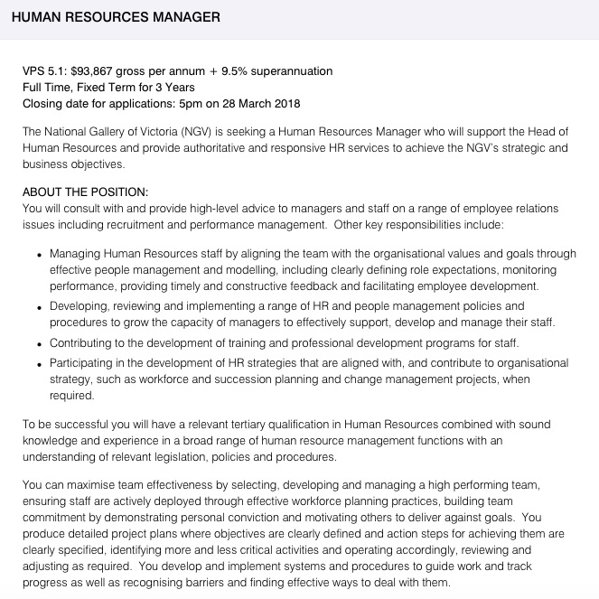

MY IDEAL JOB

JOB DESCRIPTION:
This position involves supporting the Head of Human Resources at The National Gallery of Victoria by providing advice and resolutions on various issues involving employees. Working with staff on issues of recruitment and employee performance management are also key responsibilities of this role. This position appeals to me as I believe that I have great communication and social skills and am able to come to fair and well informed conclusions when it comes to resolving conflicts of any nature.
SKILLS, QUALIFICATIONS AND EXPERIENCE REQUIRED:
A tertiary education in Human Resources is a qualification required for this position. Experience in human resource management is also required, along with personal skills that include honesty, strong multitasking abilities, interpersonal and leadership skills.
MY CURRENT SKILLS, QUALIFICATIONS AND EXPERIENCE:
I am currently enrolled in (and attending) tertiary education that has outcomes and pathways linked to Human Resources. I have no experience yet due to my age and lack of opportunity at this stage in my life, but do however possess many of the ideal skills that are required of a Human Resource Manager.
MY PLAN:
I will further develop and obtain the required skills by continually looking for opportunities and experiences that will better me as a person, such as leadership roles and furthering my university studies on human behaviour and interactions. In regards to obtaining my qualifications for this position, I will endeavour to finish my current degree and potentially take my studies further, narrowing in on exclusively focusing on Human Resource Management. To improve my experience I will need to seek out opportunities that will allow me to adopt a leadership role. Potentially embarking on an internship to gather information and experience on the day to day work of a Human Resource Manager may also help me to improve my level of experience in the human resource field.